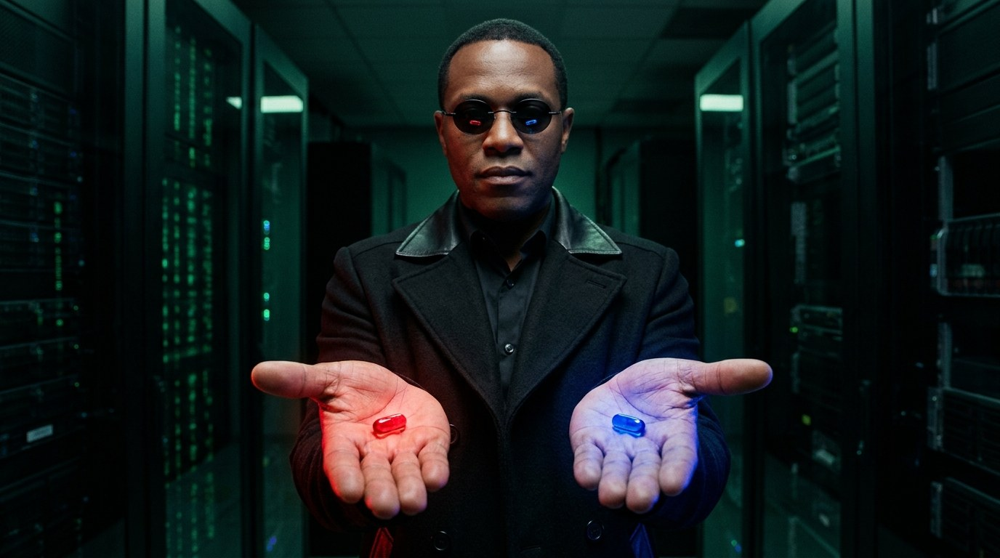
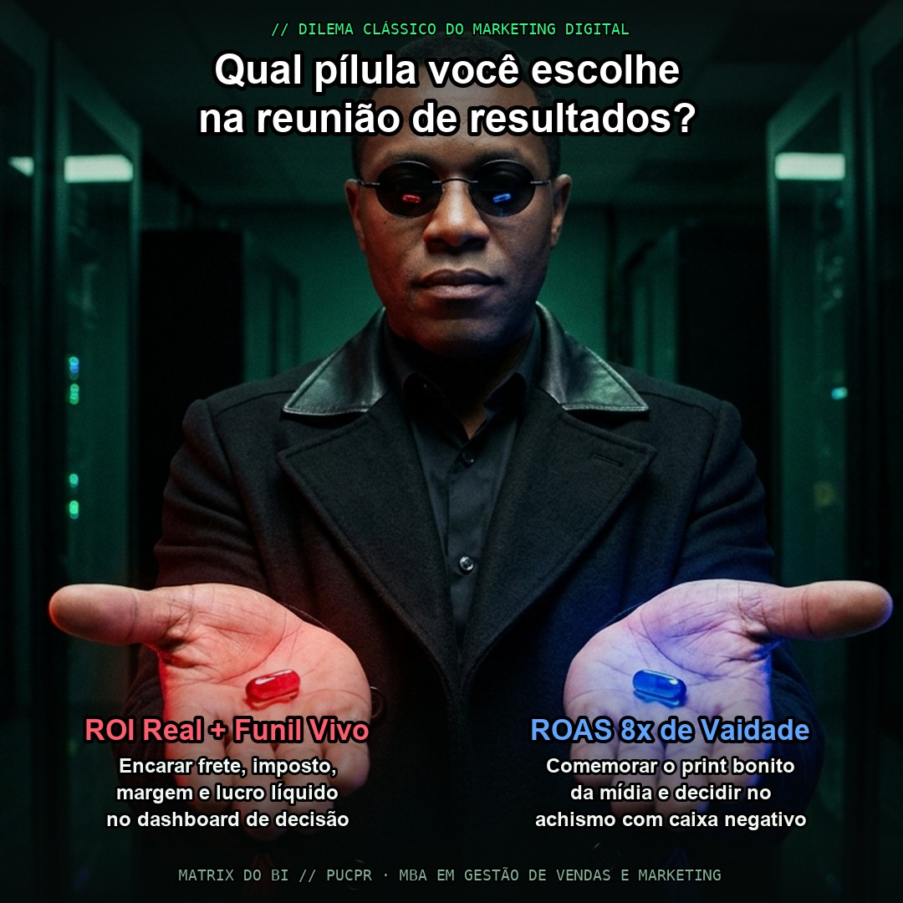
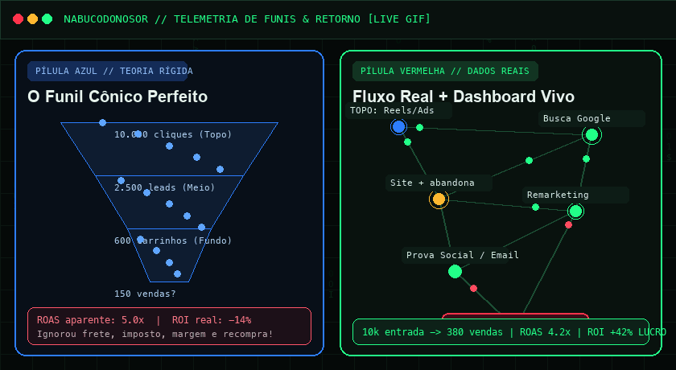

ROAS
Return on Ad SpendROAS = Receita dos Anúncios ÷ Custo dos Anúncios
Lente tática de publicidade: mede quantos reais brutos voltaram para cada R$ 1 investido especificamente em mídia paga.
No marketing — que hoje é indivisível do digital — olhar métricas isoladas cria uma simulação confortável de sucesso. Escolha uma cápsula abaixo para enxergar a diferença entre vaidade de mídia e saúde real do negócio.

Você despertou na Nabucodonosor: aqui o anúncio só é vitorioso quando paga produto, frete, imposto e deixa lucro líquido (ROI), acompanhando o trânsito real do usuário até a conversão.
ROI > 0% · DECISÃO ATIVA“Transmissão interceptada da Nabucodonosor. Se administrar é decidir, por que tantas empresas ainda decidem no achismo? A pílula azul te faz comemorar um ROAS de seis vezes no painel de anúncios, esquecendo frete, impostos e margem, enquanto o caixa sangra. A pílula vermelha revela o ROI real do negócio e mostra que o funil digital não é um cone perfeito de livro: é um fluxo vivo onde milhares entram no topo, circulam por múltiplos canais e afunilam até a conversão. Saia da ilusão das métricas de vaidade. Conecte seus dashboards à decisão.”
Ainda existe quem separe “marketing tradicional” de “marketing digital”, quando ambos respondem à mesma lógica estratégica de negócio. Com dezenas de canais e ferramentas rodando ao mesmo tempo, ROAS e ROI cumprem papéis distintos — e confundi-los é o atalho mais rápido para o achismo.
Imagine um e-commerce que investe R$ 10.000 em tráfego pago e fatura R$ 40.000 em vendas vindas desses anúncios. No painel da plataforma de mídia, o resultado brilha: ROAS de 4,0x (400%). Quem tomou a Pílula Azul dobra a verba na mesma hora.
Mas quem tomou a Pílula Vermelha abre a planilha completa da operação: soma o custo da mercadoria vendida (R$ 22.000), impostos e taxas de pagamento (R$ 6.000), subsídio de frete (R$ 4.500) e ferramentas/equipe (R$ 2.500). Somando os R$ 10.000 de mídia, o custo total foi R$ 45.000 para faturar R$ 40.000 — um ROI negativo de -11,1%.
ROAS = Receita dos Anúncios ÷ Custo dos Anúncios
Lente tática de publicidade: mede quantos reais brutos voltaram para cada R$ 1 investido especificamente em mídia paga.
ROI = [(Receita − Custo Total) ÷ Custo Total] × 100
Lente executiva de negócio: desconta todos os custos da operação e revela se a estratégia realmente gerou lucro ou queimou caixa.

Arraste os controles ou clique em um cenário real para ver como a margem operacional muda completamente a leitura do resultado.
Fora e dentro do Google Analytics, o desenho clássico em cone virou apenas um ponto de partida. Hoje os usuários entram, saem, pesquisam, comparam e retornam em múltiplos formatos — mas a essência permanece: um grande volume ingressa no topo, percorre estágios intermediários e afunila até converter no objetivo estabelecido.

“Vivemos tempos em que novas ideias surgem a todo momento, com a capacidade de desmoronar verdades da noite para o dia.”MATTOS, 2017, p. 17 — Comportamento dinâmico que remodela os funis digitais
“Painéis gráficos e planilhas de resultados, para que pudessem ser visualmente atraentes e ao mesmo tempo se concentrassem nos indicadores básicos de desempenho a serem monitorados pelos tomadores de decisões.”SHARDA; DELEN; TURBAN, 2019, p. 13 — O papel real de um dashboard em BI
Clique na decisão que você tomaria em cada situação. Cada resposta registra um evento real no Google Analytics desta página.
A agência comemorou ROAS de 6x numa campanha com frete grátis e cupom de 30% OFF, mas o financeiro apontou margem bruta de apenas 22% antes da mídia.
Selecione uma alternativa para validar.
O dashboard do GA4 mostra 15.000 visitas na página do produto, 2.800 adições ao carrinho, mas apenas 45 compras concluídas.
Selecione uma alternativa para validar.
A diretoria pediu um painel semanal com 48 gráficos diferentes que ninguém lê até o fim nas reuniões de segunda-feira.
Selecione uma alternativa para validar.
Tag ativa no código: GTM-TQJJ7PX4 (fluxo GA4 G-G5BRN5BX5G). Todas as interações abaixo alimentam os relatórios reais do Google Analytics.